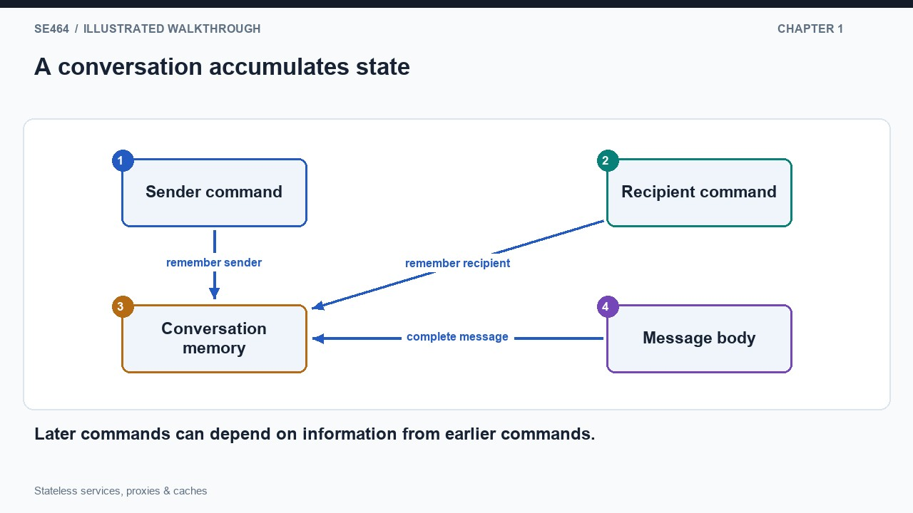
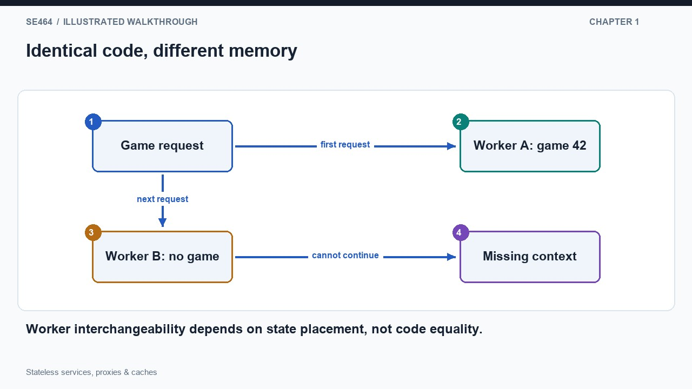
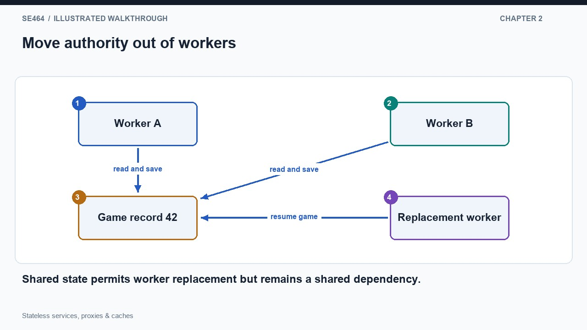
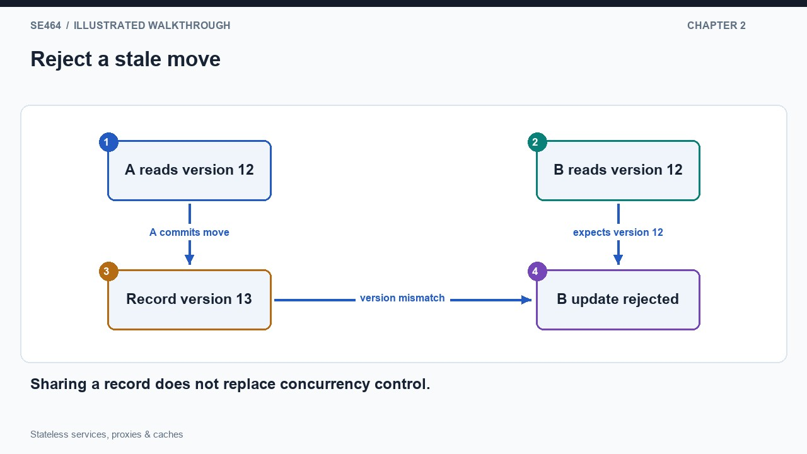
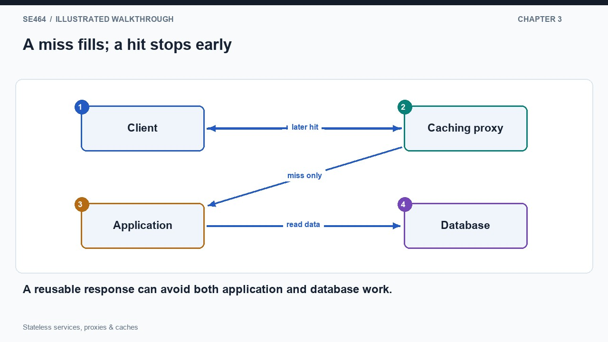
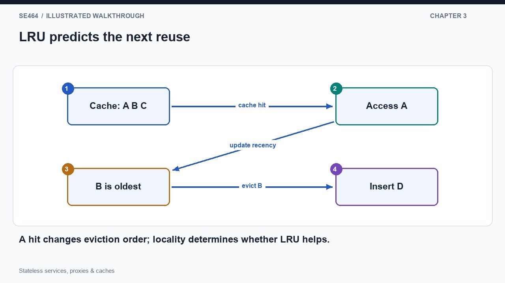
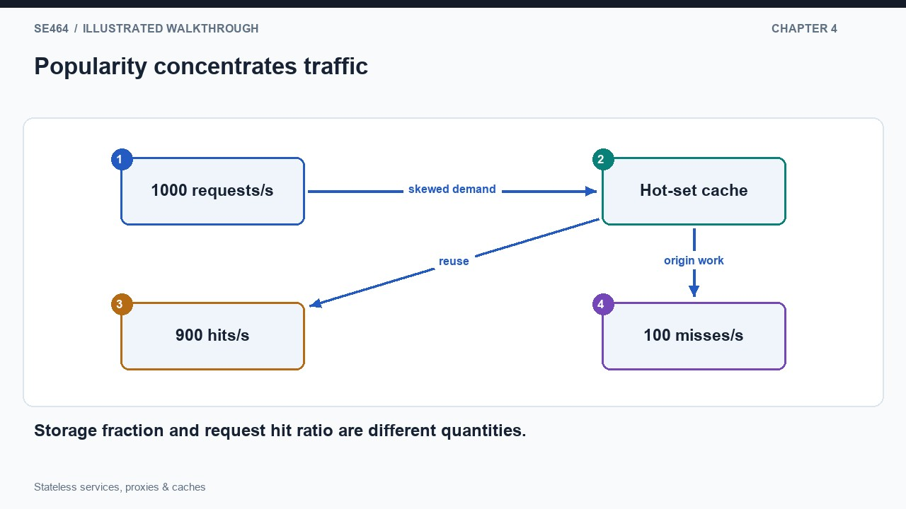
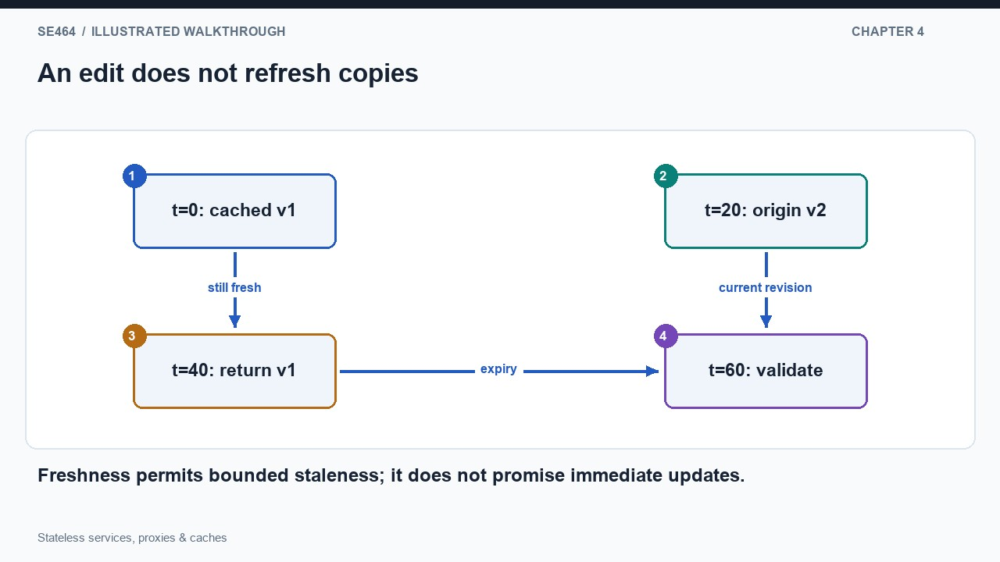

Make worker state explicit, understand intermediary roles, and reason about cache hits, eviction, and stale data.
A useful way to discover state is to interrupt a conversation halfway through it and move the next message to a fresh worker. Consider an email submission dialogue: earlier commands establish the sender and recipients, while a later command supplies the message body. A worker that sees only the final body cannot reconstruct the complete operation. It needs information retained from the earlier messages. The diagram shows these pieces accumulating in one conversation context. State is therefore not simply data in a database; it includes any remembered information that later processing depends on, including process variables, an open connection's context, or a partially completed user interaction.
HTTP requests are designed to carry the information needed to interpret each individual exchange, but an HTTP application can still introduce a dependency on a particular worker. Imagine worker A storing an unfinished game only in its own memory. The next request contains the game identifier but reaches worker B, whose dictionary has no corresponding entry. Identical code does not make these workers interchangeable because they have different histories. The illustration follows the identifier to the wrong memory store and exposes the missing information. Before adding replicas, ask whether another worker can complete the request using the request itself and explicitly shared services, without consulting the original worker's private history.
A stateless application tier does not imply a stateless system or a mathematical pure function. Workers can read changing records, write durable changes, consult the clock, or produce nondeterministic results. The important deployment property is that a particular client's previous requests need not have visited that same process. State may be carried by a client token or maintained in shared storage, each with its own security and coordination requirements. Avoid moving arbitrary authoritative data to the client merely to remove server memory: clients can alter untrusted input. Draw the owner and lifetime of every important state item, then simulate a worker restart between consecutive requests to reveal hidden dependencies.


No. Shared data, time or randomness can change; statelessness concerns worker-local conversational state.
Start with a chess application that keeps a dictionary of active games inside one process. Cloning that process creates several independent dictionaries, so each game becomes tied to the worker holding it. Instead, put the authoritative game record in shared storage and include its identifier in each request. A worker loads the board, validates the requested move, saves the result, and returns the updated representation. A replacement worker can now continue after the original process disappears. The diagram shows two interchangeable application workers converging on one game record. We have removed a placement constraint from the application tier, but we have deliberately created a shared dependency that needs its own capacity and availability design.
Externalizing state does not automatically make concurrent updates correct. Suppose two requests both read game version twelve. The first valid move updates the record to version thirteen. If the second request blindly writes its earlier view, it can erase the accepted change or apply a move to an obsolete board. A conditional update that succeeds only while the version is still twelve lets exactly one of these competing updates win. The second request must reload and reconsider its action. The diagram marks the two reads and the rejected stale write; it makes clear that a common storage location and a correct update protocol solve different problems.
Login state illustrates the complementary role of the client. After authentication, a browser can receive an opaque session identifier and return it in later requests. Any worker uses that identifier to look up the session in shared storage. A signed token can instead carry verifiable claims, but its contents are not confidential merely because it is signed, and expiration or revocation still requires a policy. Neither approach authorizes every requested game move: the application must still verify the user's rights and the current game state. These separations make the system easier to reason about: tokens identify a session, shared records retain domain state, and atomic update rules preserve invariants when requests overlap.


No. The update must enforce the game rules with appropriate transactions, conditions or version checks.
A proxy is an intermediary: it accepts the client's request, knows which upstream service can answer it, and relays the response. Add storage to that intermediary and it can remember reusable answers. On the first request for article A, the cache has no matching entry, so it forwards the request to the application. The application reads data and constructs the response; the proxy saves an eligible copy while returning it. A second equivalent request can be answered directly from that copy. The diagram shows the miss visiting origin and the hit stopping early. The performance gain comes from avoiding repeated work, not from making the original computation intrinsically faster.
Because a cache has a finite budget, admitting a new object may require evicting another. Consider room for three equally sized items and accesses A, B, C, A, D. After the second access to A, B is the least recently used entry. An LRU policy evicts B when D arrives, preserving A and C. The illustration emphasizes that a hit updates the recency order even though it does not fetch another object. This policy exploits temporal locality: recently useful data may be needed again soon. It is a prediction about the workload, not a guarantee; a scan of unrelated objects can displace a genuinely useful working set.
Two placements give different responsibilities. With an application-managed cache, the application explicitly checks a fast store and fetches from authoritative storage on a miss. With a transparent caching proxy, the client uses one ordinary service interface and the intermediary performs the lookup and forwarding. In both cases define the key, eligibility rules, eviction policy, and response to cache failure. A missing cache entry should not be confused with missing authoritative data. Also distinguish latency from load reduction: a miss may pay both a cache lookup and origin work, while a hit avoids origin entirely. Measure hit ratio alongside actual costs and correctness so a high hit count does not disguise cheap hits and expensive misses.


B, because A was accessed more recently.
Why can a small cache remove a large fraction of service traffic? Requests are often unevenly distributed. A few popular articles receive repeated reads while many less popular articles form a long tail. If a cache stores the frequently requested subset, its fraction of all stored documents can be small even while its fraction of answered requests is large. For an illustrative workload of one thousand requests per second with a ninety percent hit ratio, only about one hundred misses per second reach origin, ignoring validation and other traffic. The diagram separates the hot set from the long tail rather than treating all documents as equally likely to be requested.
The price of reuse appears when an authoritative value changes after a cached copy was saved. Suppose a public timetable response can remain fresh for sixty seconds. At time zero the proxy stores version one; at time twenty the origin publishes version two. An otherwise eligible request at time forty can still receive version one under that freshness policy. At expiry, the cache must refresh or validate before ordinary reuse. The diagram places the edit and expiry on separate paths to show why updating origin does not instantly update every copy. Select a freshness window from the application's tolerance for stale information, not only from the hit ratio you hope to achieve.
HTTP caching fields express different permissions. A public response may be eligible for shared-cache storage; private restricts storage to a private cache. A long freshness lifetime does not override private. No-cache permits storage but requires validation before reuse, whereas no-store prohibits storing the response. Validators can avoid retransmitting unchanged content, but validation still involves communication. Personalized responses need keys and policies that prevent one user's representation being served to another. Finally, a successful cache may become a dependency of the capacity plan: after eviction or restart, a burst of misses can overwhelm an origin sized only for the warm-cache load. Plan and measure warm, cold, and stale-cache behavior separately.


Yes. A high hit rate can serve stale or identity-inappropriate data; correctness and hit rate are separate.
The new instance must access authoritative game state and apply the move atomically or with version checking. Stateless workers alone do not prevent conflicting moves.
One hit, on the third access A. C evicts B; the final B is a miss.
The representation depends on identity. Use correct private/no-store policy or safe cache key and variant handling; URL equality alone is insufficient.
A public course page and a private student-results page share an application. Design a caching policy and explain what happens when a course description changes.
Cache public responses only when their freshness and variation rules allow it. Keep personalized results out of shared caches unless a carefully designed private partitioning scheme permits it. Define TTL, validation, or invalidation for updated course content. Versioned immutable assets simplify cache reuse. Include cache keys, user identity, and stale-content tolerance in the design.
Questions-only worksheet · Worked answer sheet
A train timetable API caches one popular route for sixty seconds. At expiry, 500 requests arrive nearly together; every request independently fetches the same route from the database before storing it. The database becomes overloaded although the long-run cache hit rate is high. Which design most directly reduces this duplicate refresh work without extending freshness beyond the published limit?
Best answer: A.
Coalescing concurrent misses for the same key lets one request fetch and populate the new value while others await that refresh. It avoids five hundred identical database reads without serving content beyond the allowed freshness limit. The refresh coordination needs a timeout and failure path so a failed owner does not block everyone forever. Increasing cache capacity does not address synchronized expiry for one key. Indefinitely serving stale content would change the correctness promise rather than solving the stated problem.
A high average hit rate can hide a dangerous burst at expiry; refresh coordination targets that burst.
A media service sees 2,000 requests/s: 70% request thumbnails and 30% request originals. Thumbnail cache hit rate is 95%; original hit rate is 40%. Each origin request costs the same CPU work. Calculate the origin request rate and overall hit rate. Then a release changes the mix to 40% thumbnails and 60% originals, with hit rates unchanged. Quantify the origin-load change and explain why a single old hit-rate number is unsafe for capacity planning.
Initially, thumbnail misses are 2000×.7×.05=70/s and original misses are 2000×.3×.6=360/s. Origin load is 430/s and hit rate is 1−430/2000=78.5%. After the mix changes, misses are 40/s plus 720/s, totaling 760/s; hit rate becomes 62%. Origin load rises by 330/s, or about 76.7%, despite unchanged total traffic and per-class hit rates. Capacity planning must preserve workload composition, not assume that a historical aggregate cache ratio stays valid. Track these classes separately when setting origin-capacity alerts.
Cache effectiveness is a workload-dependent weighted quantity; changing popularity or object classes can expose the origin.
A catalog cache is initially empty. Reader A begins loading version 10 from the database. An editor commits version 11 and invalidates the cache. Reader A then finishes and stores version 10, so subsequent readers receive stale data for the full TTL. Propose a cache-population protocol that prevents this specific race. State the ordering or version assumption it needs and a deterministic test for it.
Associate cache population with a version or generation and reject writes from an older generation. For example, refresh A reads generation g before loading; after commit, the editor atomically advances the cache generation and invalidates the value. A may populate only if the generation remains g. This requires coordination that preserves the generation marker even when the value is absent and orders invalidation after commit. In a test, pause A after its old read, commit and invalidate version 11, then resume A and assert version 10 is not installed.
Invalidation alone cannot stop an in-flight stale writer; the protocol must check whether the writer’s evidence is still current.